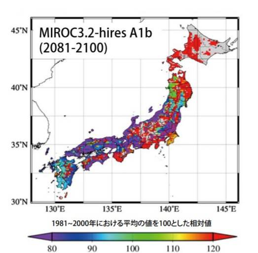
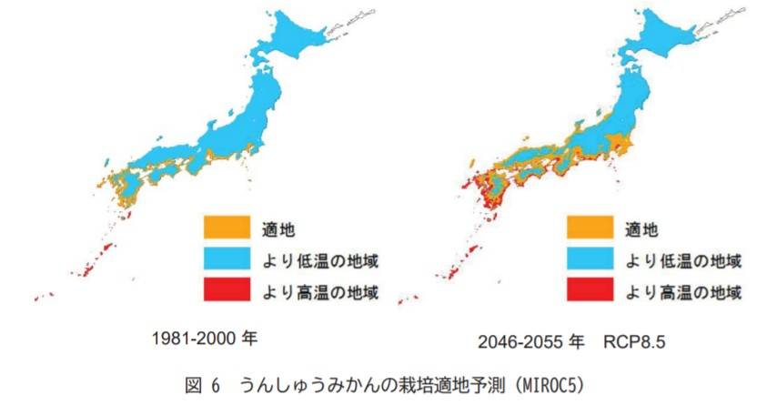
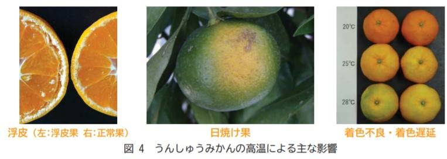

植物
植物は、古くから私たちと密接な関係にあり、衣食住の全てを担うことができるとても重要なものです。
植物はわずかな気温上昇でも悪影響を被る可能性があり、また、平均気温の変化だけでなく、降水量の変化や異常気象の増加なども懸念されています。
ここでは、主に暖かい地域で栽培される米とみかんの受けている影響の現状と対策を説明していきます。
- 米
- みかん
米
我が国のコメ生産はすでに、一部の地域あるいは極端な高温年に、収穫量の減少が見られています。
また、見た目や味の点でコメの品質に悪い影響を与える白未熟粒の発生も、各地で報告されています。
ここでは、コメが温暖化によって与えられた影響を、収穫量、品質の二つに分けて説明していきます。
コメ収穫への影響
まず、数ある気候モデルと温室効果ガス排出シナリオの組み合わせで計算した気候変化シナリオを、
コメ統計モデルに入力し、わが国の地域別コメ収量を予測しました。
予測結果は、現在より+2℃の気温上昇までは全国的にコメ収量は増加傾向にあるものの、+3℃を超えると北日本を除き減収することを示しています。
次に、イネ成育・収集モデルを使い、地域ごとに詳細な収集予測を行いました。北海道や東北などの図中赤色の地域では、
今世紀末まで収量は増加する傾向にあるものの、北関東や中部以西の青色の地域では減少が予測され、コメ栽培の適地、不適地が偏る結果となりました。
コメ品質への影響
日本のコメ生産では、収量だけでなく、品質が重要視されます。
そこで、高温による品質低下のリスクを評価するため、コメ品質を表す温度指標としてHDDという指標を作成し、成育モデルによる将来予測を行いました。
その結果、図3に示すように、今世紀半ば以降、図中の黄色や赤色で示される、コメ品質の低下リスクが大幅に増加していくことが示唆されました。
品質の指標としてより一般的なのは、法廷検査により得られた一等米比率です。
そこで過去の統計情報から得られる一等米比率を、その年の気温と日射量から推定する統計モデルを用いて、将来の一等米比率を予測しました。
その結果、気候変動シナリオによる違いは見られるものの、九州地方の一等米比率は今世紀半ばでは約30%、今世紀末では約40%も減少することが示されました。
対策
・高温障害対策
コメは、登熟期に気温が高くなることで品質が低下します。このような高温障害への当面の適応策として、
登熟期の高温を避け、移植期を変える対策や、「にこまる」等、高温に強い品種に転換を図る対策が進められています。
また、種籾を直接水田に播いて栽培する直接栽培は、移植栽培と比べて収穫までの期間が長く、
登熟期を真夏から外すことができるため、高温障害を回避する技術として注目されています。
・斑点米カメムシ対策
斑点米を防止する対策として、斑点米カメムシ類が水田に侵入することを防ぐため、
あぜなどの草刈りを稲の穂がでる2週間前までに実施する対策や、発生予測に基づいて的確に防除する対策等が行われています。
みかん
日本では歴史的にみて古くから生活の中に入り込んでいました。これらのうち一般にみかんとして親しまれているのは
温州みかんで、日本の果樹の中では栽培面積、生産額ともに他の果樹を引き離しています。
温州みかんは、夏季は高温多湿で冬季は比較的低温な日本の気候風土に適し、千葉県から鹿児島県の、
年平均15～18℃の地域で栽培され、16～17℃の所で良品質の果実を生産します。
収穫への影響
図 は将来の気温予測に基づいた、温州みかんの栽培適地についての将来予測を示しています。
「果樹農業の振興を図るための基本方針」(農林水産省，2020)では、温州みかん栽培に適する地域を“年平均気温が15～18℃の地域”としています。
1981～2000年の栽培適地に比べ、2046～2055年頃には、より内陸部にかけて栽培適地が拡大するほか、日本海側や南東北の沿岸部まで栽培適地が広
がることが予測されている一方、栽培に適さない高温の広がりも予測されます。
品質への影響
温州みかんへの高温による影響として図に示す浮皮、日焼け果、着色不良・着色遅延にほか、発芽・開花期の全身、生理落果の増加、
病害虫、腐敗果、果物の肥大不良等が報告されています。
対策
四国・九州地方では、夏の高温による水分の不足と強い日差しにより、日焼け果が増加しています。
日焼け果防止対策として、袋掛けをするなど、遮光資材で覆う対策が行われています。
また、日焼け果になりやすい上部の果実をあらかじめ摘んでおくことにより、被害を減らす対策も行われています。
長期的には、高温に強い品種を育成することが必要とされています。
米とみかんをまとめて農林水産分野においては、品目別に今後実施すべき適応策の工程表を示しており、当面の適応策について生産現場に普及・指導していくこととしています。